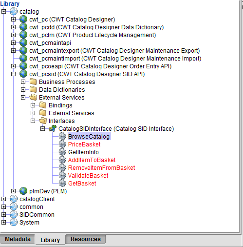

The following is a list of SID-compliant interfaces available through Catalog. Each Information Framework (SID) interface is described in more detail, and contains sample input and output XML files provided through the SoapUI tool:
You can find these Catalog SID interfaces in the Library folder of the cwt_pcsid namespace.

To access the SID-compliant API interfaces, use the following URL for the target server:
http://catalog:8180/cwf/services/CatalogSIDInterface?wsdl
Where catalog is the hostname, 8180 is the port, and cwf is the application server.
For external access, use the IP address of the hostname, such as the following:
http://64.40.185.86:8280/cwf/services/CatalogSIDInterface?wsdl